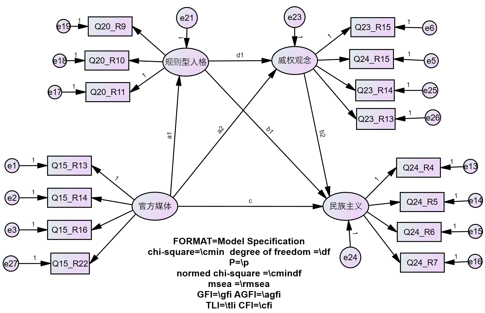

4 中介效果检验
4.1 远程中介的效果检验
4.1.1 操作
中介模型建立以后，一般通过Bookstrap查看其直接效果和间接效果在Bias-corrected percentile method和Percentile method的区间情况和显著度。若为简单的双中介模型，首先需要确认总中介效果是否显著；若是远程中介（链式中介），则首先需要确认远程中介效果是否显著。
为方便解读输出结果，现给每一条路径标记。
knitr::include_graphics("picture/path_label.png")

图2.1: path_label
在User-defined estimand中，进行如下设置。
- ind1 = a1 * b1 第一个中介“规则型人格”的中介效应
- ind2 = a2 * b2 第二个中介“威权观念”的中介效应
- diff = ind1 - ind2 ind2与ind3两个中介影响是否有差异
- ind3 = a1 * d1 * b2 远程中介效应
- totind = ind1 + ind2 + ind3 总中介效应
- total = c + totind 总效应
4.1.2 解读
Bias-corrected percentile method
knitr::include_graphics("picture/User-defined_estimands_bias.png")
图1.1: User-defined_bias
Percentile method
knitr::include_graphics("picture/User-defined_estimands_percentile.png")
图2.2: User-defined_percentile
直接路径需要单独看，在此不赘述，汇成总表如下：
knitr::include_graphics("picture/mediator_effects.png")
图2.3: mediator_effects
由汇总表格可以看出，远程中介模型中，直接效应点估计值为0.234，并且显著；远程中介效应点估计值为0.034，并且显著；中介路径ind1与中介路径ind2的点估计值分别为0.117和0.150，并且都显著；总中介效应点估计值为0.301，并且显著。其中，中介路径ind1与ind2并不存在显著差异，两条路径对民族主义影响没有差异。 综上，“规则型人格”和“威权观念”在影响“民族主义”的路径中，起着显著的远程中介效应，中介效果点估计值IE=0.034，SE为0.006。